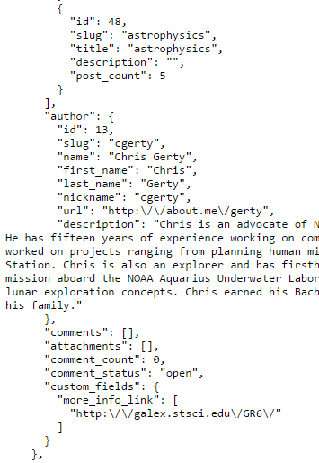

Philip Lewallen's How to guide to data.nasa.gov
What is in the data.nasa.gov JSON object
List of the different data names and what they represent
I will use a small screentshot of the code returned by the method to refer to when discussing the different data fields in the JSON.

- categories: These nested JSON objects are used to identify which category or categories this data fits into. Inside of each cateogyr object is an "id", a "slug", a "title", "description" and a "post_count". These data fields have the same use as their previously described cousins which exist outisde of the category nested object.
- author: A nested object with different fields describing the author of the site referenced.
- author: id: The unique id of the author.
- author: slug: A sanitized version of the authors name. It has no capitals or spaces and has an abbreviation for the first name. This is a valid variable to search for with the method get_search_results.
- author: name: The name of the Author.
- author: first_name: The first name of the Author.
- author: last_name: The last name of the Author.